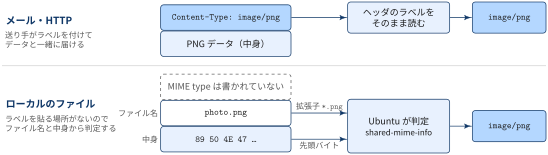
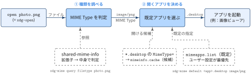

- MIME type（正式名称は media type）は「このデータは何か」を受け手に伝えるための
type/subtype形式のラベル - ラベルはファイルの中ではなく，HTTP やメールのヘッダなどデータの外側に付く
- ラベルのないファイルの MIME type は，ツールが拡張子や中身から推測する．ツールによって推測方法が違うので，結果が食い違うことがある
| やりたいこと | 書き方 |
|---|---|
| ファイルの中身から判定する | file --mime-type FILE |
| GNOME の判定結果を見る | gio info -a standard::content-type FILE |
| デスクトップ環境の判定結果を見る | xdg-mime query filetype FILE |
| MIME type に対応する既定アプリを見る | xdg-mime query default image/png |
| Webサーバーが返すラベルを見る | curl -sI URL \| grep -i content-type |
MIME Typeとは
Definition 1 MIME Type
- データの種類を表すための標準的なラベル．「このデータは HTML 」「これは PNG 画像」と受け手に伝えるために使う
type/subtypeの形で書き，必要に応じて;区切りでパラメータを付ける- 種類の一覧は IANA が管理しており，現在の正式名称は media type
形式
タイプ/サブタイプ の形 + 必要に応じてパラメータを付与して，以下のように記述
# HTML 形式のテキストで，文字コードは UTF-8
text/html; charset=utf-8MIME Typeの構成要素
| 部分 | 例 | 意味 |
|---|---|---|
| type（トップレベルタイプ） | text |
データの大分類．人が読めるテキスト |
| subtype | html |
大分類の中での具体的な形式 |
| パラメータ | charset=utf-8 |
解釈に必要な追加情報．text では文字コードを指定することが多い |
代表的な MIME type
| MIME type | 内容 |
|---|---|
text/plain |
プレーンテキスト |
text/html |
HTML |
text/csv |
CSV |
application/json |
JSON |
application/pdf |
|
image/png |
PNG 画像 |
multipart/form-data |
複数のパートをまとめたもの（フォームの送信など） |
application/octet-stream |
種類不明の汎用バイナリ |
電子メールの MIME との関係
Definition 2 電子メール文脈でのMIME
- Multipurpose Internet Mail Extensions の略
- テキスト（ASCII）しか送れなかった電子メールで日本語・画像・添付ファイルを送るための拡張規格
もともとの電子メール（RFC 822）は，本文に ASCII のテキストを入れることしか想定していませんでした． 画像や添付ファイル，日本語のような ASCII 以外のテキストを送るために，MIME という仕組みが利用されています．
MIMEの機能
- 構造化: 本文がどんな種類のデータかを
Content-Typeヘッダで示す - 符号化: 画像などのバイナリを，7bit のテキストしか通さないメールの経路に乗せられる形に変換する．方法は
Content-Transfer-Encodingヘッダで示す
Exmaple 1 MIME メールの例
GIF 画像を1つ添付したメールの中身は以下のようになります．
From: "Taro Yamada" <taro@example.com>
To: "Hanako Suzuki" <hanako@example.jp>
Subject: 画像です
MIME-Version: 1.0
Content-Type: image/gif; name="logo.gif"
Content-Disposition: attachment; filename="logo.gif"
Content-Transfer-Encoding: base64
R0lGODlhcwA4AOYAAP/////++Pj9+/749fn49/H2+eX27+/v7+H07N3z6eXs8dXw5OLl6N/l68/u
...
VYVxGKjjlEqJQAAAOw==From〜Subjectは通常のメールのヘッダで，MIME-Version以下の4つが MIME で追加されたヘッダ- 空行のあとが本文で，GIF のバイナリが Base64 でテキストに変換されて入っている
MIME で追加されたヘッダ
| ヘッダ | 役割 | 例 |
|---|---|---|
MIME-Version |
MIME のバージョン．1.0 しか存在しない |
1.0 |
Content-Type |
本文のデータの種類（media type）とパラメータ | image/gif; name="logo.gif" |
Content-Disposition |
本文の扱い方．inline は本文と一緒に表示，attachment は添付ファイルとして扱う．filename で元のファイル名を伝える |
attachment; filename="logo.gif" |
Content-Description |
本文につける説明（コメント） | "This is My Picture" |
Content-Transfer-Encoding |
本文をテキストに変換した方法 | base64 |
Content-Disposition は送り手の意図を伝えるもので，受け手のメーラがその通りに表示する保証はありません．
HTMLやPNGファイルのどこにMIME Typeがあるのか？
- 電子メールでは，
Content-Type: image/gifのように MIME type がメッセージのヘッダに書かれて，データと一緒に届く - 一方，ローカルにある HTML や PNG のファイルには，MIME type はどこにも書かれていない．ファイルの中身はただの HTML や PNG のデータである
- ファイルの MIME type は OS（Ubuntu ならデスクトップ環境）がその都度判定して分類している
PNG や HTML という形式と，MIME type というラベルは別のものです． メールや HTTP では送り手がラベルを貼ってくれますが，ローカルのファイルにはラベルを貼る場所がありません． ファイルに付いているのはファイル名（拡張子）と中身だけなので，Ubuntu はこの2つを手がかりに「このファイルは image/png だ」と分類しています．

Ubuntu が MIME type を判定する仕組み
- Ubuntu（GNOME）では，shared-mime-info というデータベースに「どんなファイルをどの MIME type に分類するか」のルールがまとめている
- ルールは MIME type ごとに XML で定義されいる
<!-- /usr/share/mime/packages/freedesktop.org.xml より抜粋 -->
<mime-type type="image/png">
<comment>PNG image</comment>
<magic>
<match type="string" value="\x89PNG\r\n\x1A\n" offset="0"/>
</magic>
<glob pattern="*.png"/>
</mime-type>| 要素 | 手がかり | 意味 |
|---|---|---|
<glob> |
拡張子 | ファイル名が *.png にマッチすれば image/png |
<magic> |
中身 | ファイルの先頭（offset="0"）が \x89PNG\r\n\x1A\n で始まれば image/png |
GNOME のアプリやファイルマネージャは，gio（GLib）を通じてこのデータベースを引き，ファイルの MIME type を決めています． 判定結果は以下のコマンドで確認できます．
% gio info -a standard::content-type photo.png
standard::content-type: image/png
% xdg-mime query filetype photo.png
image/png拡張子との違い
拡張子（.png など）は MIME type を判定するための手がかりの1つにすぎず，MIME type そのものではありません．
| 拡張子 | MIME type | |
|---|---|---|
| 付いている場所 | ファイル名 | メールや HTTP のヘッダ．ローカルのファイルには付いておらず，OS が判定する |
| ファイル名がない場面 | 使えない（HTTP の URL や API のレスポンスには拡張子がないことが多い） | 使える |
| 中身との一致 | 保証されない（名前は自由に変えられる） | 保証されない（送り手の自己申告，または OS の推測） |
Exmaple 2 open コマンドでデフォルトアプリケーション起動ができる機序
Ubuntu の open は xdg-open へのリンクです．
% readlink -f "$(command -v open)"
/usr/bin/xdg-openopen photo.png を実行すると画像ビューアが起動するのは，xdg-open が「ファイル → MIME type → アプリ」の2段階で開くアプリを決めているからです． ファイルとアプリを直接結びつけるのではなく，間に MIME type を挟んでいるのがポイントです．

open photo.png で既定アプリが起動するまでの流れ① 種類を調べる: ファイル → MIME type
前節の shared-mime-info を使って，photo.png を image/png に分類します．
% xdg-mime query filetype photo.png
image/png② 開くアプリを決める: MIME type → .desktop
アプリ側は，自分が開ける MIME type を .desktop ファイル（アプリの起動設定）の MimeType= に宣言しています．
# /usr/share/applications/org.gnome.eog.desktop（画像ビューア）より抜粋
Exec=eog %U
MimeType=image/bmp;image/gif;image/jpeg;image/png;...これを MIME type ごとに集計したものが mimeinfo.cache で，「image/png を開けるアプリの候補一覧」になります． 候補の中からどれを使うかは mimeapps.list の既定の指定で決まり，ユーザー設定（~/.config/mimeapps.list）が最優先されます．
| ファイル | 役割 | 例 |
|---|---|---|
*.desktop の MimeType= |
アプリが開ける MIME type の宣言 | MimeType=image/png;... |
mimeinfo.cache |
上を MIME type ごとにまとめた候補一覧 | image/png=org.gnome.eog.desktop;... |
mimeapps.list |
MIME type ごとの既定アプリ | image/png=org.gnome.eog.desktop |
# image/png の既定アプリを確認
% xdg-mime query default image/png
org.gnome.eog.desktop
# 既定アプリを変更（~/.config/mimeapps.list に書き込まれる）
% xdg-mime default org.gnome.Shotwell-Viewer.desktop image/pngアプリを起動する
最後に，選ばれた .desktop ファイルの Exec= の行（eog %U）の %U をファイルの URI に置き換えて実行します． ファイルの種類の判定（①）と，種類ごとのアプリの割り当て（②）が分かれているので，mimeapps.list を1行変えるだけで，すべての PNG ファイルを開くアプリを切り替えられます．
データ分析で使う場面
API のレスポンスを確認する
requests のレスポンスを .json() で読もうとしてエラーになる場合は，まず Content-Type を確認すると原因の切り分けが早くなります．
import requests
r = requests.get(url)
print(r.headers["Content-Type"]) # application/json を期待していたのに text/html（エラーページ）だった，などcurl でもヘッダだけを確認できます．
% curl -sI https://example.com | grep -i content-type
content-type: text/htmlJupyter の出力表示
Jupyter Notebook でセルの出力が表やグラフになるのも MIME type の仕組みです． カーネルは1つの出力を複数の MIME type で同時に返し，フロントエンドが表示できる中で最もリッチなものを選びます．
"data": {
"text/plain": " a b\n0 1 3\n1 2 4",
"text/html": "<table>...</table>"
}上は pandas の DataFrame を表示したときの .ipynb の中身です． Jupyter Lab では text/html が表として表示され，ターミナルの IPython では text/plain が使われます．
よく見る MIME type
| 形式 | MIME type | 備考 |
|---|---|---|
| CSV | text/csv |
|
| TSV | text/tab-separated-values |
|
| JSON | application/json |
|
| JSON Lines | application/x-ndjson, application/jsonl など |
IANA 未登録で，ツールによって表記が揺れる |
| Parquet | application/vnd.apache.parquet |
|
Excel (.xlsx) |
application/vnd.openxmlformats-officedocument.spreadsheetml.sheet |
古い .xls は application/vnd.ms-excel |
| Jupyter Notebook | application/x-ipynb+json |
|
| Markdown | text/markdown |
|
| SVG | image/svg+xml |
+xml は中身が XML であることを表す |
| gzip / zip | application/gzip / application/zip |
subtype の vnd. はベンダー（Apache，Microsoft など）が登録したもの，x- は IANA に登録されていない慣習的なものを表します．
Appendix: 用語集
glossary:
- def: IANA (Internet Assigned Numbers Authority)
description: |
インターネットで使う番号や名前を管理する組織．
IP アドレスの割り当てやポート番号の一覧と並んで，media type の登録簿も管理している．
- def: Content-Type ヘッダ
description: |
メールや HTTP のメッセージで，本文のデータの MIME type を伝えるヘッダ．
`Content-Type: text/html; charset=utf-8` のように，MIME type とパラメータをそのまま書く．
- def: マジックナンバー
description: |
ファイル形式を識別するために，ファイルの先頭に置かれる決まったバイト列．
例えば PNG は `\x89PNG\r\n\x1a\n`，PDF は `%PDF`，ZIP は `PK\x03\x04` で始まる．
`file` コマンドはこれを使って，拡張子に頼らずにファイルの種類を判定する．
- def: shared-mime-info
description: |
freedesktop.org が管理する，Linux デスクトップ向けの MIME type データベース．
拡張子のパターン（`globs2`）とマジックナンバーの両方の判定ルールを持ち，`gio` や GNOME / KDE のファイルマネージャが利用する．
- def: mimeapps.list
description: |
MIME type ごとの既定アプリを書く設定ファイル．
`[Default Applications]` セクションに `image/png=org.gnome.Loupe.desktop` のように書く．
`xdg-mime default` で変更すると `~/.config/mimeapps.list` に書き込まれる．
- def: MIME sniffing
description: |
受け手（主にブラウザ）が，送り手の付けた MIME type を信用せずに中身から種類を推測し直す動作．
ラベルの付け忘れを補える一方，意図しない解釈によるセキュリティ問題の原因にもなる．References
- RFC 2045: MIME Part One: Format of Internet Message Bodies
- RFC 2046: MIME Part Two: Media Types
- RFC 6838: Media Type Specifications and Registration Procedures
- IANA > Media Types
- freedesktop.org > Association between MIME types and applications
- MDN > MIME types
- regmonkey post > VS Code の使い方（Appendix:
xdg-openの動作）